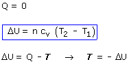

Adiabática (No se intercambia calor)
 |
 |
Si no se conocen n, T1, T2 habrá que obtenerlos a partir de los datos apli-cando la ecuación de estado y la de la transformación
| Adiabática (No se intercambia calor)
Si no se conocen n, T1, T2 habrá que obtenerlos a partir de los datos apli-cando la ecuación de estado y la de la transformación |